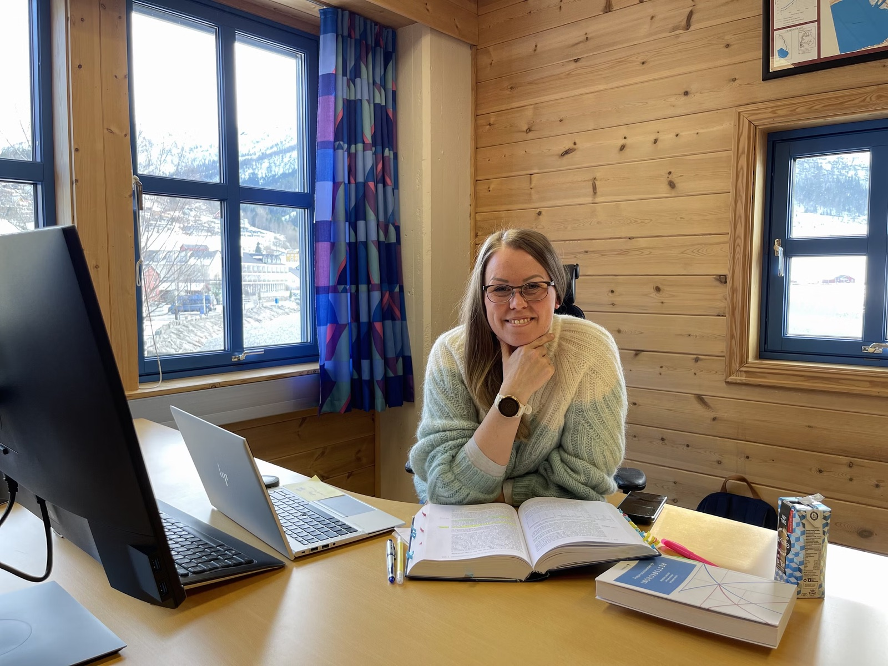

Fast kontor
Ta kontakt for pris
Eige kontor på fast basis i eit triveleg fellesskap, for deg som treng ein stabil arbeidsplass i Hornindal.
- Eige, fast kontor
- Del av eit aktivt miljø
- Møterom ved behov
- Sentralt på Grodås
Smia · Grodås
Smia på Grodås er kontorfellesskapet i Hornindal, og er tenkt som base for Hornindal 514 Utvikling. Leig fast kontor, ta ein drop-in-dag, eller bruk den gratis studentstova. Volda kommune leiger ut lokala.
Tre måtar å bruke Smia
Ta kontakt for pris
Eige kontor på fast basis i eit triveleg fellesskap, for deg som treng ein stabil arbeidsplass i Hornindal.
200 kr / dag
Treng du ein arbeidsplass for ein dag eller to? Book drop-in akkurat når det passar deg.
Gratis for studentar
Studerer du desentralisert? Kontor 215 er ei av seks studentstover i Nordfjord, og heilt gratis å bruke.
Gratis studentstove
Studentstova på Smia er kontor 215, og er ein del av nettverket til StudieHub – Fjordane Studiesenter: seks studentstover i Nordfjord og Sunnfjord, drivne saman med kommunane. Du finn dei i Nordfjordeid, Stryn, Iglandsvik, Sandane, Selje og her i Hornindal.
Tilbodet er gratis for alle som studerer desentralisert. Her får du skrivebord, to skjermar, tastatur og mus, trådlaust nett, kaffi og te, printar og eit møterom du kan booke ved behov, og ikkje minst eit lite studentmiljø å vere ein del av.
Les meir om studentstovene hos StudieHub →
Volda kommune om gratis kontorplass for studentar →
Hugs å gjere deg kjend med branninstruksen før du tek lokalet i bruk.
Praktisk
Fast kontor og samarbeid: anders.lodemel@hotmail.com (Anders Lødemel, Hornindal 514 Utvikling).
Booking og praktisk: Volda kommune servicekontor, 70 05 87 00 (kvardagar 10–15).
